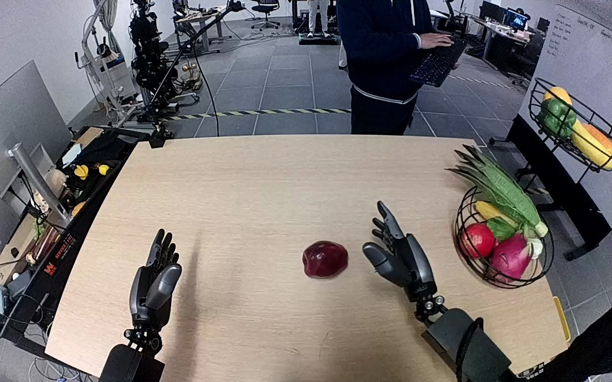

NVIDIA GR1 · 64
Video 64

Visual review action_review.json
{
"prompt_protocol": "humanoid_action_v1",
"prompt_provenance": "visually_authored_from_video_and_initial_frame",
"reviewed_contact_sheets": [
"sheet_001.jpg"
],
"inspected_frame_stride": 2,
"inspected_sampled_frame_count": 60,
"initial_scene": "Robot-view camera looks down between two robot forearms toward a tabletop. An isolated dark red apple is near the center, a two-tier black wire produce tray stands on the right, and a person is beyond the table. Both robot hands are initially open.",
"observed_sequence": [
{
"source_frame_interval": [
0,
30
],
"action": "Right arm reaches inward toward the isolated dark red apple with open fingers. Left hand remains open without contacting the apple or tray.",
"confidence": "high"
},
{
"source_frame_interval": [
31,
54
],
"action": "Right hand surrounds the apple and closes its fingers and thumb around it; apple is held under the palm.",
"confidence": "high"
},
{
"source_frame_interval": [
55,
66
],
"action": "Right arm lifts the grasped apple from the table and carries it rightward toward the lower wire tray.",
"confidence": "high"
},
{
"source_frame_interval": [
67,
84
],
"action": "Person reaches to the produce tray and slides the complete two-tier stand leftward toward the robot. Right hand continues holding the apple beside the lower tray; no human hand-to-robot object transfer occurs.",
"confidence": "high"
},
{
"source_frame_interval": [
85,
111
],
"action": "After the person withdraws the reaching hand, right hand carries and lowers the apple into the lower basket among the other produce.",
"confidence": "high"
},
{
"source_frame_interval": [
112,
119
],
"action": "Right fingers extend and thumb opens while the hand remains inside the lower basket. The dark red apple moves below the palm into the partly obscured produce area; the final open hand is still over/in the basket.",
"confidence": "medium-high"
}
],
"arm_hand_roles": {
"right": "Active grasp, lift, transport and lowering of the apple; fingers and thumb open within the lower basket at the end.",
"left": "Open idle hand at the near-left side of the table, without object grasp or tray stabilization.",
"person": "Slides the two-tier tray toward the held apple, then withdraws the reaching hand; does not receive the apple."
},
"anatomical_side_evidence": {
"convention": "Ego-oriented camera looks forward/down between forearms emerging from the robot body side at the bottom of the view. The active forearm extends from the robot right side into image right, with its thumb opposing the fingers on the inward side. The other forearm emerges from robot left with its inward thumb on image right of that hand. These forearm origins and opposed hand anatomy support the right/left assignment, independently consistent with the source instruction.",
"confidence": "high",
"uncertainty": "Full shoulders and torso are outside the camera view; assignment uses the ego body-side forearm origins and hand anatomy."
},
"coordination": "One robot hand performs the apple transfer. The human moves the destination tray toward the apple while the robot holds it, then the robot lowers and opens its hand. There is no two-robot-hand support or hand-to-hand transfer.",
"terminal_state": "Right hand is open inside/over the lower black wire basket among produce. Apple has been lowered beneath the palm and is partly hidden by the hand and produce. Left hand remains open. No withdrawn-hand view verifies its final settled position.",
"uncertainties": [
"The apple and basket base are partly occluded at the opening transition; precise final support/contact and settled apple position cannot be verified because the right hand remains in the basket at frame 119."
],
"annotation_discrepancies": [],
"evidence_frame_indices": [
0,
38,
54,
68,
84,
100,
112,
115,
117,
119
],
"selected_execution_status": "uncertain",
"outcome": "Grasp, lift, transport, lowering into the intended lower tray and hand opening are visible. Final stable placement after hand withdrawal is not shown.",
"video_id": "64",
"dataset": "NVIDIA_GR1_100",
"dedicated_review_agent": "review_gr1_64",
"review_source_video": "NVIDIA_GR1_100/64/original/original.mp4",
"source_frame_count": 120,
"source_fps": 20.0,
"native_detail_frames": [
38,
54,
68,
84,
100,
112,
115,
117,
119
],
"world_model_prompt": "The robot grasps the dark red apple at the center of the table with its right hand, lifts it, and carries it toward the lower black wire tray. A person slides the tray toward the robot while it holds the apple; the robot lowers the apple among the other produce and opens its hand inside the tray. Keep the camera fixed; preserve robot geometry, physically valid joint motion, and normal gripper opening and closing.",
"original_task_instruction": "Use the right hand to pick up dark red apple from center of table to bottom level black wire tray.",
"selected_segment": {
"start_frame": 0,
"end_frame_exclusive": 120,
"reason": "Complete original single-task reference; no cropping or trimming requested."
},
"source_video_sha256": "2afaaacc46a5c53da58fcf07120fad189132eef745f9b2ad2395cf44ebfb1ab3",
"review_completed_at": "2026-10-13T18:23:45.417065+00:00"
}